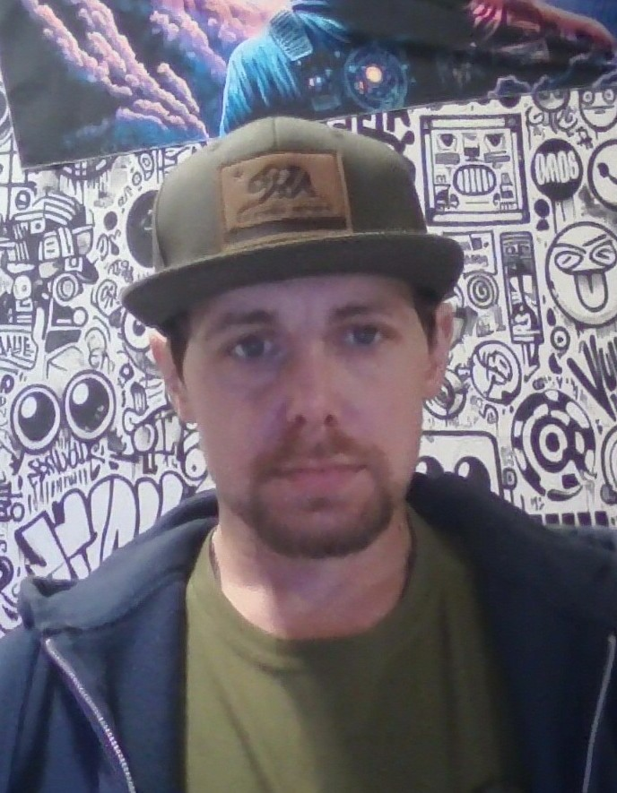
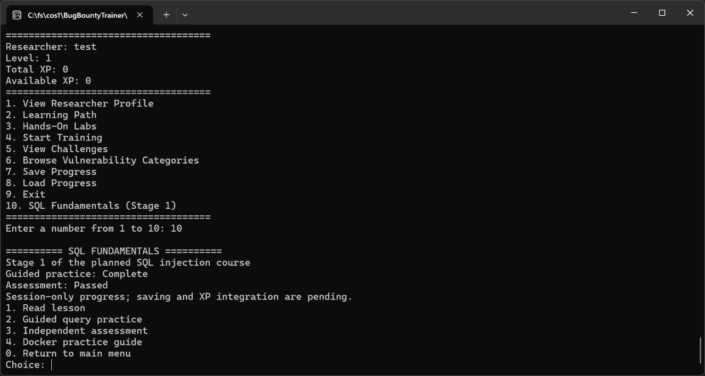

Programming Languages
C++20, SQL, HTML, CSS
Computer Science Student | Aspiring Software Developer
I am a Computer Science student at Full Sail University with a passion for software engineering, cybersecurity, and application development.
I enjoy creating interactive applications that solve problems and provide meaningful learning experiences. My programming experience includes C++20, object-oriented programming, SQL, Git, GitHub, and Docker.
My current focus is BugBountyTrainer, an interactive cybersecurity education application designed to teach ethical hacking concepts through guided lessons, hands-on labs, and progressive challenges.

About Me
I am pursuing a Computer Science degree at Full Sail University, with an expected graduation date of April 2027. My interests include software engineering, cybersecurity, database development, and building interactive educational applications.
Throughout my programming coursework, I have developed experience in C++20, object-oriented programming, data structures, file input/output, input validation, and debugging.
I enjoy creating applications that challenge me to organize complex systems into smaller, manageable components. I am especially interested in applications that combine technical problem-solving with practical learning experiences.
My current development work focuses on BugBountyTrainer, an interactive cybersecurity training application that combines educational content, programming challenges, SQL fundamentals, and hands-on security exercises.
As I continue my education, I plan to strengthen my understanding of secure software development, software architecture, automated testing, and modern development technologies.
Technical Skills
The following skills and technologies represent my experience through coursework and the development of BugBountyTrainer.
C++20, SQL, HTML, CSS
Microsoft Visual Studio, Git, GitHub, GitHub Projects, Docker Desktop, SQLite, Windows PowerShell
Object-Oriented Programming, Classes and Objects, Header and Source Files, Vectors, Functions, Loops, File I/O, Input Validation, Debugging, Version Control, Regression Testing
Git Branching, Pull Requests, Software Testing, Program Planning, Problem-Solving, Code Organization, Technical Documentation
SQL Fundamentals, SQL Injection Concepts, Docker-Based Training Labs, Secure Coding Fundamentals, Database Querying
Current Course Project
BugBountyTrainer was developed during my Project and Portfolio I: Computer Science course at Full Sail University.
This project demonstrates my growth in C++ programming, object-oriented design, software architecture, debugging, testing, and professional GitHub development workflows.

C++20 | Cybersecurity | SQL | Docker
BugBountyTrainer is an interactive C++20 console application designed to teach foundational cybersecurity and ethical hacking concepts.
The application allows users to create researcher profiles, complete guided learning modules, participate in training challenges, earn experience points, and track their progress.
The program also introduces SQL fundamentals and SQL injection concepts through educational exercises and isolated Docker-based training environments.
My goal was to create an application that makes cybersecurity education more accessible through structured, interactive learning.
C++20, Microsoft Visual Studio, Git, GitHub, GitHub Projects, PowerShell, Docker, SQLite, Object-Oriented Programming, File I/O, and Regression Testing.
One of the most significant challenges I encountered was developing a reliable save and load system as BugBountyTrainer expanded to include additional training modules and progression data.
Early versions of the application required improvements to prevent inconsistent progress restoration, duplicate rewards, and problems caused by invalid save files.
I addressed these issues by improving input validation, updating the SaveManager architecture, and introducing additional checks before restoring saved progress.
I also developed regression tests to verify that completed challenges, XP rewards, and training progress behaved correctly.
By the final development milestone, the application successfully passed 52 regression checks with zero failures.
This experience reinforced the importance of testing, debugging, and maintaining reliable application data.
Developing BugBountyTrainer strengthened my understanding of C++ programming, object-oriented design, file management, debugging, and program architecture.
I learned how to organize a larger application using multiple classes with separate header and source files.
I also gained experience implementing input validation, persistent data storage, and automated regression tests.
Working with Git and GitHub taught me how to manage development branches, create meaningful commits, review pull requests, and document changes throughout the development process.
Most importantly, the project helped me understand how to break complex programming challenges into smaller tasks, test each improvement, and gradually build a more reliable software application.
Contact
My name is Raymond Smith, and I am a Computer Science student at Full Sail University.
I am interested in software development, cybersecurity, and opportunities to continue learning and contributing to technical projects.
I welcome opportunities to connect with developers, employers, and others who share an interest in software engineering and secure application development.